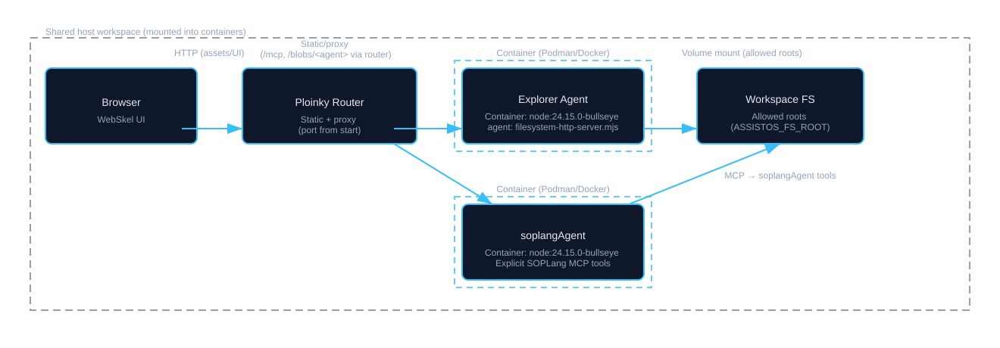

Architecture
This section provides a detailed look at the technical architecture of the Explorer agent, from the containerized runtime to the frontend application.
Explorer agent runs inside Ploinky, the workspace runtime that routes traffic to agents, serves static bundles, and manages enabled repos/agents.
The backend also acts as the MCP tools provider: it exposes filesystem-safe operations (read/write/list/move/copy, tree, media read, allowed roots) under the Explorer agent, enforcing whitelisted roots and path resolution.

Runtime and Routing
The Explorer agent's container configuration is defined in manifest.json. This file specifies how the container runs, including mounting the workspace and the agent library. When started with Ploinky, the router exposes Explorer on the chosen port (e.g. 8080 after p-cli start explorer 8080), serving static assets and proxying API requests to the Explorer container (see Ploinky architecture for routing details).
Note: soplangAgent is a separate container (repo SOPLangBuilder) that receives MCP requests (e.g. soplang-tool with SoplangBuilder.buildFromMarkdown) from clients such as Explorer UI or other agents. It does not rely on the Explorer backend for data access; it runs in the same workspace and can read files directly according to its own configuration.
Backend (filesystem-http-server.mjs)
The backend is a Node.js server that leverages the @modelcontextprotocol/server-filesystem library for its core filesystem logic. Its responsibilities are summarized below.
Static file server
Serves frontend assets (HTML, JS, CSS) and discovered plugin bundles directly from the repo tree.
MCP tool provider
Exposes filesystem-safe MCP operations; other agents and the UI rely on these tools to interact with the workspace.
Security layer
Enforces an allowed-directory whitelist and normalizes incoming paths via resolvePathsInArgs to block traversal and unauthorized access.
Plugin discovery
aggregateIdePlugins scans enabled repos for IDE-plugins/*/config.json, resolves assets, and returns a merged catalog to the UI.
Blob uploads
In the Ploinky architecture, the router proxies /blobs/<agent> to the agent that implements blob handlers. Explorer and soplangAgent follow this pattern: UI helpers post to /blobs/<agent>, the router forwards to the agent, and the agent returns JSON (id, localPath, optional downloadUrl) for the stored payload. The shipped filesystem-http-server.mjs itself does not implement that endpoint, so blob-capable behavior comes from wiring the router to an agent that does.
Frontend (WebSkel SPA)
The frontend is a Single-Page Application (SPA) located in the explorer/ directory, built using WebSkel, a lightweight, component-based framework for building reactive web applications. More on WebSkel here.
Navigation area
Users browse and select files or documents here. Components such as files-menu provide a hierarchical view of the workspace.
Content / editor area
This is the main interactive space for viewing or editing the selected item. Structured Markdown flows through document-view-page; other text/code uses file-editor with syntax highlighting.
The application structure lives in webskel.json, which lists components, pages, and modals. Key components include:
| Component | Description |
|---|---|
file-exp |
The main page orchestrating the file explorer view. |
file-exp-entries |
Dedicated presenter for rendering and updating the entries table/list. |
file-exp-preview |
Dedicated presenter for preview area orchestration (code/media/markdown/html). |
html-web-view |
Sandboxed iframe presenter used by HTML preview (Code/Web/Split modes). |
document-view-page |
Renders a full document with its chapters and paragraphs. |
chapter-item / paragraph-item |
Represents a single chapter or paragraph within a document. |
file-editor |
A general-purpose text editor for any file type. |
files-menu |
(Inferred) Component likely responsible for displaying a browsable list of files/directories. |
insert-image-modal |
A modal for uploading and inserting images into a document. |
Each component is driven by a JavaScript presenter class that manages its state and lifecycle. Presenters use an invalidate() method to trigger re-renders, making the UI reactive to data changes.
Development & Setup
Explorer runs inside the Ploinky workspace. Install Node.js 20+ and npm, enable the repo and agent, and point the filesystem root before starting the service.
Enable & start
From the Ploinky workspace root, enable the repo and global agent, set the allowed root, then start on your chosen port:
p-cli enable repo fileExplorer
p-cli enable agent fileExplorer/explorer global
export ASSISTOS_FS_ROOT=<path-to-workspace>
p-cli start explorer 8080
# UI via router: http://127.0.0.1:8080/explorer/index.html
Context & tips
Global mode runs the agent in the current workspace folder (see Ploinky CLI reference). Explorer auto-enables the soplang and multimedia agents from this repo; avoid enabling duplicates. Restart Explorer after adding or changing plugin config.json so discovery reruns. If you hack locally, run npm install at repo root (and explorer/ if needed); most UI/JS/CSS changes hot-reload in the browser.
HTML Web Preview uses repo-scoped paths (for example /.ploinky/repos/fileExplorer/docs/development.html). Keep explorer/.ploinky/repos/fileExplorer -> ../../.. versioned so preview remains portable across clean clones.
Repo layout (visual)
.../fileExplorer/explorer/
├─ .ploinky/repos/fileExplorer -> ../../.. # repo-scoped static bridge for docs preview
├─ filesystem-http-server.mjs # Backend: MCP, blob service, plugin discovery
├─ index.html / main.js # SPA entry point
├─ webskel.json # Core UI components
├─ web-components/ # Component implementations
├─ IDE-plugins/ # Plugins (discovered recursively)
│ └─ <plugin>/config.json
├─ services/ # Frontend services, parsing, document store
└─ utils/ # Shared utilities
Plugin notes
Discovery, manifest format, and tutorials (Uppercase paragraph, UI scaffold) live in the Plugins guide; this section keeps setup context only.